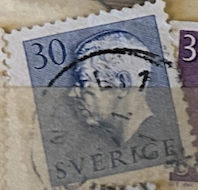
| SOURCE | TITLE| IMAGE MATCH | click to source page |
| eBay | Sweden stamp - blue denomination 40 - looks like Eight issue 25 June 1964 | eBay | 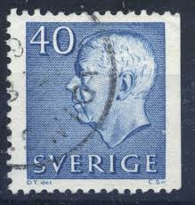 |
| Delcampe | Sweden - SWEDEN # STAMPS FROM YEAR 1957 STANLEY GIBBONS 432a | 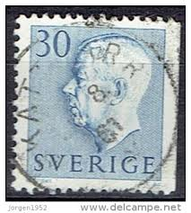 |
| HipStamp | Sweden, 1961, King Gustaf VI Adolf of Sweden, 30ö, used | Europe - Sweden, Stamp / HipStamp | 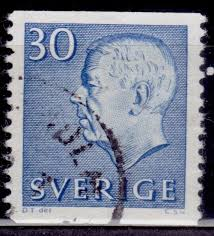 |
| HipStamp | SWEDEN Scott # 422, 459 Used | Europe - Sweden, General Issue Stamp / HipStamp | 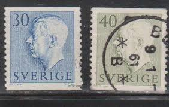 |
| Osta.ee | Leiunurk 4-35 rootsi (247429847) - Osta.ee | 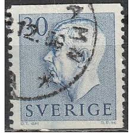 |
| 123RF | Sweden Stamp Stock Photos and Images - 123RF | 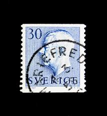 |
| Bob Shop | Sweden - 1951 SWEDEN KING GUSTAF VI was listed for 1.30 on 10 May at 17:31 by TROTSKIE in Cape Town (ID:640530827) | 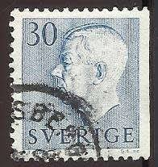 |
| Alamy | Gustaf VI Adolf a closeup portrait from Swedish money - Krone Stock Photo - Alamy | 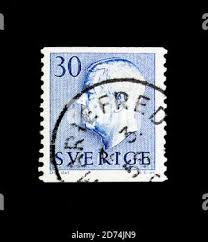 |
| Todocolección | suecia. 1961. serie basica. rey gustavo vi - Buy Antique stamps of Sweden on todocoleccion | 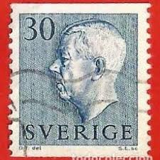 |
| Shutterstock | Gustaf vi adolf of sweden: Más de 68,340 fotos de stock con licencia libres de regalías | Shutterstock | 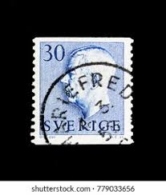 |
| Todocolección | suecia 1911-8 scott o48 sello º escudo armas se - Buy Antique stamps of Sweden on todocoleccion | 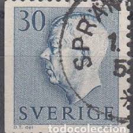 |
| I don't know much about postcards. Very cool to look at. Are they very collectible? | 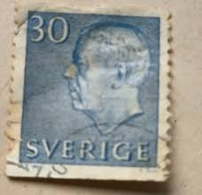 | |
| Dreamstime.com | King Gustaf VI Adolf, Serie, Circa 1957 Editorial Image - Image of state, design: 117994250 | 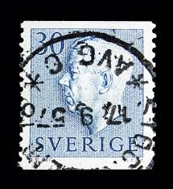 |
| lastdodo.com | 1964 King Gustaf VI Adolf type III Stamp catalogue - LastDodo | 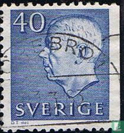 |
| Dreamstime.com | 10,607 Old King Portrait Stock Photos - Free & Royalty-Free Stock Photos from Dreamstime - Page 45 | 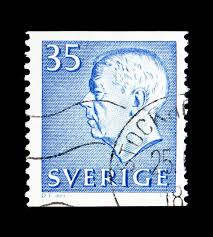 |
| Tradera | Se produkter som liknar F416 BYGGET 3.6.59 på Tradera (700859812) | 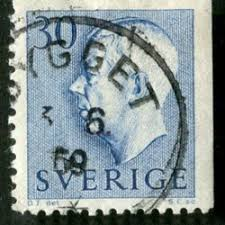 |
| Shutterstock | 2+ Hundred Gustaf Vi Adolf Sweden Royalty-Free Images, Stock Photos & Pictures | Shutterstock |  |
| ebid.net | South Africa Suid Afrika 1961 Building 2 1/2c Used Stamp. on eBid United Kingdom | 216745414 | 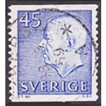 |
| Dreamstime.com | King Gustaf Vi Adolf Stock Photos - Free & Royalty-Free Stock Photos from Dreamstime | 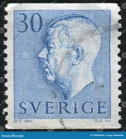 |
| Mercari | 1910 Sweden (No.39) Official | Mercari | 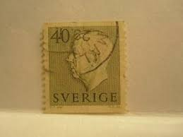 |
| Can somebody help? Swedish Christmas stamp from 1913 nowhere to be found online... | 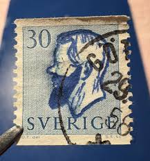 | |
| Shutterstock | Stockholm Stamps: Over 427 Royalty-Free Licensable Stock Photos | Shutterstock | 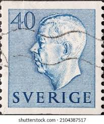 |
| Shutterstock | 25 Gustaf Vi Adolf Sveriges Royalty-Free Images, Stock Photos & Pictures | Shutterstock | 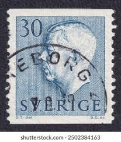 |
| Shutterstock | Sweden Circa 1960 Stamp Printed Sweden Stock Photo 725498404 | Shutterstock | 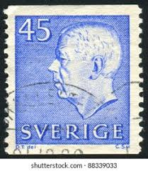 |
| Lindebilder | Ludvika, Grangärde Kyrka - Lindebilder från Lindesberg | 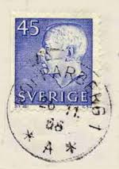 |
| stampsandstuff.net | Stamps from Sweden | 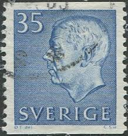 |
| Alamy | King Gustaf VI Adolf of Sweden arrives in Helsingborg, Scania, 1972. Artist: Unknown Stock Photo - Alamy |  |
| Etsy | 1957 Sweden Scott #514b Complete Booklet Postage Stamps (mint Never Hinged) - Etsy | 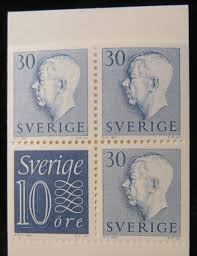 |
| Tradera | F.416 B 30 öre Gustav VI Adolf Surahammar GVI | Köp på Tradera (716789414) | 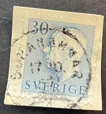 |
| Tradera | Se produkter som liknar Fa 416B ÅTVIDABERG LYXSTPL på Tradera (712164386) | 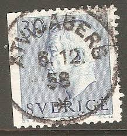 |
| Jay Smith & Associates | Perplexing Swedish Perforations: Sweden Perforation Types & Formats by Jay Smith & Associates | 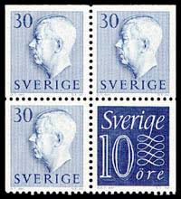 |
| HipStamp | Sweden, 1962,King Gustaf VI Adolf of Sweden, 35ö, used | Europe - Sweden, Stamp / HipStamp | 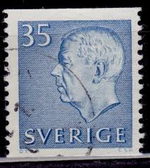 |
| Dreamstime.com | Old Postage Stamp from Czechoslovakia in 1952 Shows Klement Gottwald Editorial Stock Photo - Image of gottwald, government: 191424213 | 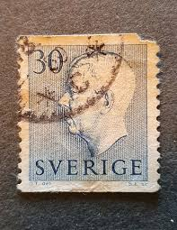 |
| Shutterstock | 1+ Thousand Gustav Adolfs Royalty-Free Images, Stock Photos & Pictures | Shutterstock | 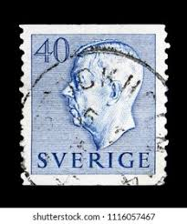 |
| Dreamstime.com | King Gustav Stock Illustrations – 12 King Gustav Stock Illustrations, Vectors & Clipart - Dreamstime | 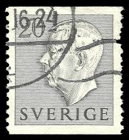 |
| Alamy | Sweden Postage Stamp - King Gustaf VI Adolf Stock Photo - Alamy | 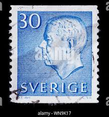 |
| Dreamstime.com | Postage Stamp Sweden 1954. King Gustaf VI Adolf Profile Portrait Editorial Photo - Image of artistic, paper: 243729991 | 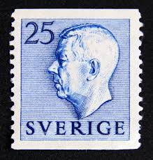 |
| Shutterstock | Sweden Circa 1951 1968 Stamp Printed Stock Photo 178028645 | Shutterstock | 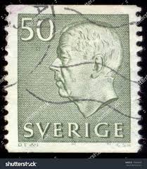 |
| eBay | Sweden Stamp Scott #586, Used | eBay | 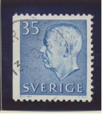 |
| Osta | Rootsi_119 1954 kuningas Gustaf VI 8 tk (247154534) - Osta.ee | 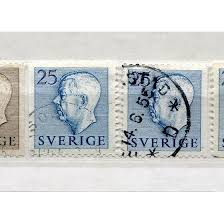 |
| Commonfund | global private equity: what and why | 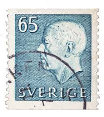 |
| HipStamp | Stamps Are Friends / HipStamp | 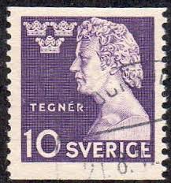 |
| Todocolección | suecia yvert 235/46 serie completa usada 1936 t - Compra venta en todocoleccion | 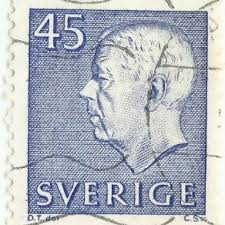 |
| Tradera | Se produkter som liknar 30 Öre Gustaf VI Adolf på kli.. på Tradera (711556223) | 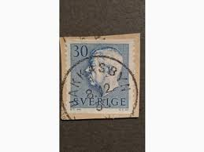 |
| Shutterstock | 4+ Hundred Gustaf Adolfs Royalty-Free Images, Stock Photos & Pictures | Shutterstock | 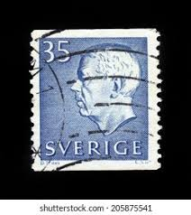 |
| Shutterstock | 40 Gustav Vi Adolf Royalty-Free Images, Stock Photos & Pictures | Shutterstock | 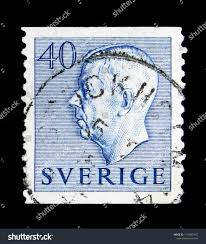 |
| Todocolección | suecia, sverige - v/f 40 - monarquía, rey gusta - Buy Antique stamps of Sweden on todocoleccion | 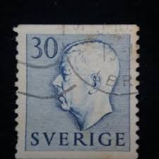 |
| Alamy | Stamp sweden post postage hi-res stock photography and images - Alamy | 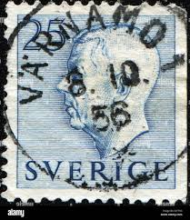 |
| eBay | Lot of 7 Swedish Stamps Sweden King Gustav 168 276 359 393 345 421 Montelius | eBay | 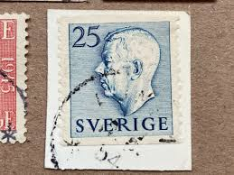 |
| Find Your Stamps Value | Value of whitman stamp packet no 6504 stamps | 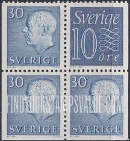 |
| eBay | Sverige Foreign 40c Blue Stamp Used - #A801 | eBay | 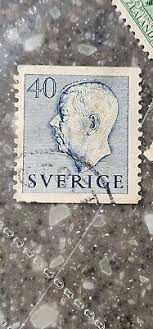 |
| Dreamstime.com | Vi Adolf Profile Portrait Stock Photos - Free & Royalty-Free Stock Photos from Dreamstime | |
| Bob Shop | Sweden - Sweden 1889 King Oscar 10 ore 4 Used stamps was listed for 0.00 on 31 Jul at 13:46 by Klaas47 in Cape Town (ID:648983196) | |
| Osta | Rootsi_119 1954 kuningas Gustaf VI 8 tk (247544128) - Osta.ee | |
| Todocolección | suecia. gustavo vi. 1951-52. yt-363. usado sin - Buy Antique stamps of Sweden on todocoleccion | |
| Dreamstime.com | Vi Adolf Profile Stock Photos - Free & Royalty-Free Stock Photos from Dreamstime | |
| PicClick | SWEDISH "SVERIGE" STAMP 35 ore -King Gustaf VI $1.00 - PicClick | |
| Todocolección | suecia 1951 scott 420 sello º king gustav vi ad - Compra venta en todocoleccion | |
| ebid.net | Turks & Caicos Islands 1978 Queen Elizabeth II Coronation 6c MH Stamp QE II on eBid United States | 218875223 |